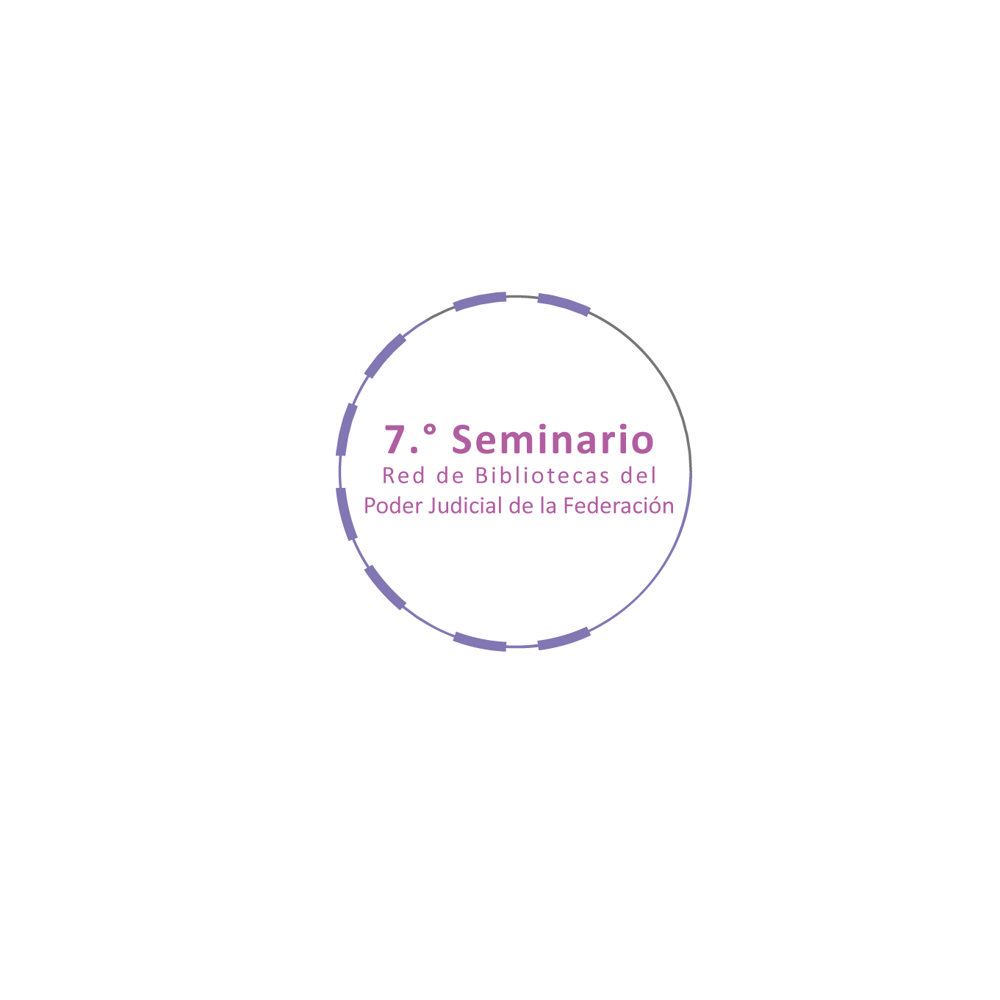

7.º Seminario de la Red de Bibliotecas del Poder Judicial de la Federación
Preservación y recuperación temática de la información en el entorno digital
15 de noviembre
10:00 a 10:15 horas
Acto de inauguración
Lic. María Adriana Campollo Lagunes
Directora General del Centro de Documentación y Análisis, Archivos y Compilación de Leyes de la Suprema Corte de Justicia de la Nación (SCJN) y Presidenta de la Comisión de la Red de Bibliotecas del Poder Judicial de la Federación.
10:15 a 11:05 horas
Conferencia magistral: Evolución de directrices internacionales sobre la preservación del patrimonio digital.
Dr. Daniel Sanabria
Bibliotecas de CETYS Universidad.
Presentadora:
Lic. África Barrales Alcalá
Instituto Federal de Defensoría Pública, Consejo de la Judicatura Federal (CJF).
11:05 a 11:15 horas
Receso
11:15 a 12:45 horas
Mesa redonda: La gestión y conservación de los objetos digitales.
Mtra. Alicia Barnard Amozurrutia
TEAM México, Proyecto InterPARES.
Ing. Miguel Ángel Gasca Gómez
Biblioteca Nacional de Antropología e Historia.
Dr. Juan Voutssás Márquez
Instituto de Investigaciones Bibliotecológicas y de la Información, Universidad Nacional Autónoma de México (UNAM).
Moderadora:
Dra. María Guadalupe Vega Díaz
Asociación Mexicana de Bibliotecarios, A.C.
12:45 a 12:55 horas
Receso
12:55 a 14:25 horas
Mesa redonda: Repositorios institucionales para la preservación de la información.
Mtra. Rosalina Vázquez Tapia
Universidad Autónoma de San Luis Potosí y Red Mexicana de Repositorios Institucionales.
Mtra. Armida Guadalupe Escalante Ilizaliturri
Colegio de Bibliotecología de la Facultad de Filosofía y Letras, UNAM.
Mtro. Alberto Castro Thompson
Instituto de Investigaciones Bibliográficas, UNAM.
Moderadora:
Ing. Margarita Roldán Sánchez
Dirección General de Tecnologías de la Información, SCJN.
16 de noviembre
10:00 a 11:30 horas
Mesa redonda: Experiencias en la preservación digital.
Dra. Tila María Pérez Ortiz
Dirección General de Repositorios Universitarios, UNAM.
Lic. Roberto Aguirre Bello
Biblioteca Nacional de Chile.
Mtra. Reyna Martha Arlin López Hernández
Dirección General de la Memoria Histórica de México.
Moderador:
Mtro. Juan Luis Carrillo García
Centro de Documentación de la Dirección General de Documentación, Tribunal Electoral del Poder Judicial de la Federación.
11:30 a 11:40 horas
Receso
11:40 a 12:30 horas
Conferencia magistral: Sistemas de Organización del Conocimiento: ¿Taxonomías, Tesauros, Ontologías?
Dr. Miguel Ángel Marzal García-Quismondo
Universidad Carlos III de Madrid, España.
Presentadora:
Lic. Efraín Guzmán Peña
Instituto Federal de Especialistas de Concursos Mercantiles, CJF.
12:30 a 12:40 horas
Receso
12:40 a 14:10 horas
Mesa redonda: Organización, identificación y localización de recursos digitales.
Dra. Adriana Suárez Sánchez
Instituto de Investigaciones Bibliotecológicas y de Información, UNAM.
Lic. Jimena Escobar Sotomayor
Mediateca, Instituto Nacional de Antropología e Historia.
Lic. Otilio Esteban Hernández Pérez
Unidad General de Administración del Conocimiento Jurídico, SCJN.
Moderador:
Lic. Rubén Jiménez Blancas
Tribunal Electoral del Poder Judicial de la Federación.
17 de noviembre
10:00 a 11:30 horas
Mesa redonda: Tesauro y lenguaje incluyente. Revertir la invisibilización documental.
Dra. Camelia Romero Millán
Centro de Estudios de Género y Centro de Estudios Sociológicos, El Colegio de México.
MLIS Amber Billey
Bard Collage y Homosaurus, Estados Unidos.
Dra. Blanca Rodríguez Bravo
Universidad de León, España.
Moderadora:
Mtra. Mariel Velázquez de Landa
Unidad General de Igualdad de Género, SCJN.
11:30 a 11:40 horas
Receso
11:40 a 13:10 horas
Mesa redonda: Tesauros jurídicos y recuperación de la información. Experiencias comunes.
Lic. Mabel Fernández Castro
Tesauro de la Corte Interamericana de Derechos Humanos.
Dr. Luis Pomed Sánchez
Servicio de Doctrina Constitucional, Tribunal Constitucional de España.
Abogada Silvia Ciavelli
Tesauro del Sistema Argentino de Información Jurídica de Derecho Argentino.
Moderador:
Lic. Otilio Esteban Hernández Pérez
Unidad General de Administración del Conocimiento Jurídico, SCJN.
13:10 a 13:20 horas
Receso
13:20 a 14:10 horas
Conferencia magistral: Sistemas de organización del conocimiento para el ejercicio del derecho de acceso a la justicia.
Lic. Ana Karina Castolo Rodríguez
Dirección General de Estrategia y Transformación Digital, CJF.
Presentadora:
Mtra. Alma Medellín Luque
Centro de Documentación y Análisis, Archivos y Compilación de Leyes, SCJN.
14:10 a 14:25 horas
Acto de clausura
Lic. Agustín Millán Gómez
Director General de Documentación del Tribunal Electoral del Poder Judicial de la Federación y Vocal de la Comisión de la Red de Bibliotecas del Poder Judicial de la Federación.